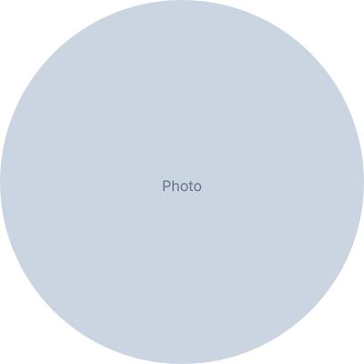

U.S. Foreign Service
Economic Officer | Data Analyst | Policy Professional
Rangel Fellow and SAIS graduate with expertise in economic diplomacy, geospatial analysis, and data-driven policy. Passionate about leveraging data analytics to inform foreign policy and international development.

About
Abdul Sanderson is a Rangel Fellow and graduate of the Johns Hopkins School of Advanced International Studies (SAIS), where he focused on international economics and quantitative methods. He brings a unique combination of policy expertise and technical data skills to the field of economic diplomacy. His work spans geospatial analysis, financial modeling, and interactive data visualization, with a focus on trade, development finance, and emerging markets. He will begin serving as an Economic Officer in the U.S. Foreign Service in 2025.
Experience
U.S. Department of State · Starting 2025
Incoming Economic Officer in the U.S. Foreign Service, focusing on economic diplomacy, trade policy, and international development.
Johns Hopkins SAIS · 2023–2025
Charles B. Rangel International Affairs Fellow. Studied international economics and quantitative policy analysis at the School of Advanced International Studies.
Organization · Dates
Description of previous professional experience and responsibilities.
Portfolio
Geospatial analysis of bilateral trade patterns across Sub-Saharan Africa using ArcGIS Pro.
View Project →Interactive dashboard tracking key economic indicators across developing economies.
View Project →Tableau dashboard analyzing foreign direct investment trends and capital flows.
View Project →Certifications
Issuing Organization · 2024
Issuing Organization · 2024
Issuing Organization · 2023